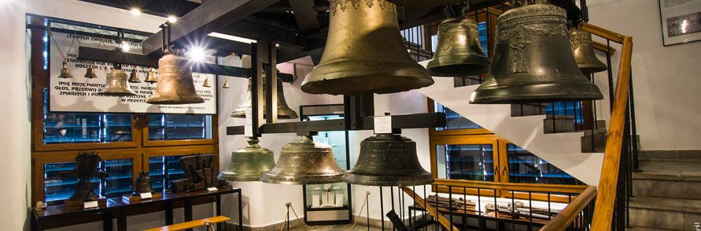

Powrót do strony głównej

Powstałe we wrześniu 2001 roku Muzeum Dzwonów i Fajek mieści się w obrębie Starego Miasta, w późnobarokowej Wieży Zegarowej.
Wieża ta była wzniesiona w latach 1775-1777 jako dzwonnica unickiej katedry i po kasatach józefńskich przeszła na własność miasta.
W roku 1983 stała się własnością Muzeum Narodowego Ziemi Przemyskiej, a ostatni remont sprawił,
że osie je kondygnacj przystosowano do funkcji wystawienniczych i urządzono ekspozycję zabytków ludwisarstwa i fajkarstwa – wyrobów,
z których nasze miasto słynęło i słynie w kraju i za granicą.
Ekspozycja fajek, umiejętnie wkomponowana w architekturę Wieży, ulega stopniowo modyfkacji, co ma związek przede wszystkim ze znacznym powiększeniem kolekcji o zakupy i dary.
Na pierwszym piętrze prezentowane są fajki ze zbiorów muzealnych. Największą grupę stanowią artystyczne fajki z sepiolitu,
które powstały w większości w XIX wieku na terenie ówczesnej monarchii austro-węgierskiej i w Niemczech.
Wśród nich zwraca uwagę fajka dekorowana epizodem z koroną św. Stefana, a także milenijna fajka węgierska według projektu J. Koppa, kilka fajek „z fałszywą datą”,
liczny zespół fajek biedermeierowskich a także o formie ukształtowanej w ośrodku w Ruhla. Interesującym dodatkiem są drobne sprzęty i akcesoria fajczarskie.
Z drewnianych szczególnie cenna jest unikalna główka w kształcie głowy tajemniczego zwierzęcia,
pełna humoru myśliwska fajka z Kelc na Morawach oraz zdobiona sceną rustykalną, należąca do lwowskiego cukiernika Sotschka.
Interesującego materiału badawczego dostarczają niepozorne gliniane lulki, z których najstarsza pochodzi z końca XVII,
zaś najmłodsze, tzw. fajki kawiarniane, z początku XX wieku. Kilka fajek jednorodnych jest wytworem słynnej Schlesis Fabrice w Zborowskiem.
Atrakcją turystyczną są fajki wodne tzw. nargille.
W chwili obecnej na siódmej kondygnacji prezentowana jest współczesna artystyczna i produkcyjna fajka przemyska.
Powstaje wystawa, na której dokonania działających obecnie wytwórców zostaną zaprezentowane w kontekście historii tej gałęzi rzemiosła w Przemyślu.
Nowa ekspozycja udostępnia dokumenty i realia najwcześniej działających wytwórni, a także dorobek legendarnego Ludwika Walata.
Poczesne miejsce zajmuje fajka wojskowa, głównie forteczna, łącznie z przykładami egzemplarzy wypalanych na własny użytek przez węgierskich obrońców Twierdzy.
Przedostatnia kondygnacja, z atrakcją w postaci tarasu, służy jako sala rocznych wystaw czasowych.
Ekspozycja ludwisarstwa znajduje się na czterech kolejnych kondygnacjach Wieży, począwszy od drugiego piętra.
Na pierwszej przedstawiono niezmieniony od średniowiecza proces powstawania dzwonu, a na trzech kolejnych – dzwony i inne wyroby ludwisarskie.
Większe dzwony zawieszone są w szybie wieży na specjalnym, stalowym rusztowaniu.
Wśród nich zwracają uwagę wyroby z warsztatów gdańskich i toruńskich z XVII i XVIII wieku: Gerharda II Beningka (1625), Beniamina I Wittwercka (1721), Immanuela Wittwercka (1751) oraz Nicolasa Petersilge (1759).
Z Przemyślem związane sa dwa dzwony z elementami herbu miasta: dzwon pochodzący z ratusza fundowany przez burmistrzów Czehowicza i Grzybowskiego z roku 1740
i odlany w obecności burmistrza Walerego Waygarta przez ludwisarza Jana Jaroszewskiego, dzwon z roku 1878.
Interesujący jest też pięknie zdobiony dzwon z Daromina koło Sandomierza, wykonany w roku 1935 przez Ludwika Felczyńskiego w Przemyślu,
prawdopodobnie na zamówienie ówczesnego papieża, Piusa XI.
Ekspozycje uzupełniają dokumenty i archiwalia dotyczące rodziny Felczyńskich, która, od 1808 w Kałuszu,
a od 1915 roku w Przemyślu, jest związana z ludwisarskim rzemiosłem. Obecnie dzwony Felczyńskich powstają w dwóch odlewniach przemyskich i w Taciszowie koło Gliwic.
Na kolejnym piętrze prezentowane są dzwony okrętowe wypożyczone z Centralnego Muzeum Morskiego w Gdańsku i Muzeum Marynarki Wojennej w Gdyni.
Recenzja miejsca